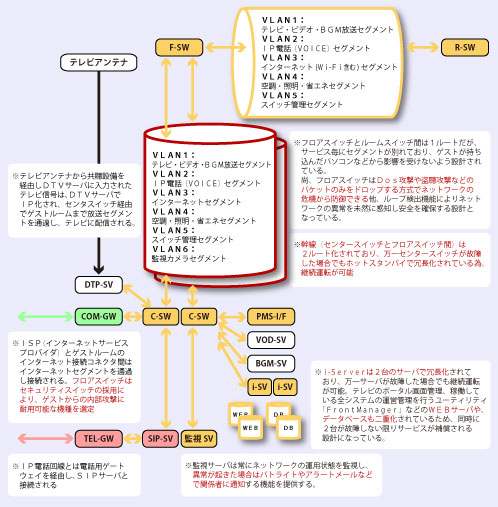

ホテル様がゲストルームに情報サービスを行う際、まず疑問に思ったのがサービス毎に異なる設備・回線 を用意しなければならなかったことでした。
そのほかにも空調・照明・コンセント・ゲストの在不在などをセンター管理する設備や回線。また、電話交換機のオプションパッケージとして提供される「メッセージ」や「ボイスメッセージ」（留守番電話サービス）の通知と確認、フロントで管理が必要な「Wake UP Call」、清掃状況とチェックインのタイミングを効率よく運用するための「ルームステータス管理」などは初期投資はもちろんのこと、運営費用にもかなりの負担を強いられている現実を考えると、それらのサービスをひとつのシステム・ひとつの回線で提供出来ないか。。。
そのことを一気に解決する方法。それがRururuBBシステムだったのです。RururuBBシステムは、ゲストルームのテレビをプラットホームと考え、全ての情報をLANケーブルに集約し、快適で安心・かつ安全なサービスを提供するとともに、施工費用の削減と運用費用の削減を実現するために生まれた方式なのです。
Re:Spec!とは、最小限の設備投資で最大限の安全と安心を得るための指針。
手近にあった紙ナプキンに三色ボールペンを走らせ「ホテル内全ての情報機器をひとつのネットワークに統合して、電話工事、同軸工事を無くし、幹線は2ルート化で、センタースイッチは二重化して・・・」と語りながらそのときのスケッチを再現してくれた。「このコンセプトは回線の一元化だったんだ。あれは私の最初のスケッチから生まれたんだよ」と瀧川氏。
彼の前職は通信機メーカーのグランドデザインディレクター。当時自販機で販売した１枚のカードでゲストルーム内で利用するペイテレビと電話料金を精算できるシステムを開発し、オール電化ホテルを進める電力会社系列のビジネスホテル建築に携わっていた。NTTグループが光TVのサービスを開始したのは2008年3月末、その5年以上前から構想を描き、2005年6月にはインターネット、テレビ放送、ビデオ放送、IP電話を統合したホテルを構築したという。 続きはこちらから
昨今のRESというメーカーは各部の安全性についてもサービスのクオリティについても、そのハイレベルぶりでは今やライバル各社のベンチマークとなるモデルを次々とリリースする。が。実は歴史を振り返るとVODサービスやインターネットサービスなど最もベーシックなモデルの分野では必ずしも成功したとは言えない状況だ。そんな過去のモデルとでは一体どこがどう違うのか？RururuBBのテクニカル・プロジェクトマネージャである大倉氏にRESの本社で話を伺った。 続きはこちらから
画像をクリックすると拡大表示されます。
RururuBBシステムは、特に新築のホテル様において基幹システムとゲストルームを繋ぐ工事は、LAN工事だけで完結するため、同軸工事、電話工事、その他空調・照明・省エネ・ルームインジケーションなどの工事は一切不要になるため、初期投資で約25%、メンテナンスコストで約50%のコスト削減が可能（当社実績値）。
また、既存のホテル様でもテレビのリニューアル、電話交換機のリニューアル、ネットワーク設備のリニューアルなどの際、RururuBBシステムの構築で将来的にかかるコストを大幅に削減することが可能です。
ホテル業界では常識でしたが、携帯電話が普及するまでの時代には、交換機の設備投資はゲストから徴収する「施設利用料」という名目の加算された通話料で賄っていました。ところがゲストのほとんどが携帯電話を持っている現在、電話交換機の設備投資はホテル経営では大きな負担となっています。
RururuBBシステムは、ホテル特有の機能を交換機ではなくテレビに移管し、交換機自体のコストを大幅に削減（当社比で半額以下）することに成功しました。
ホテルネットワークは外部からの脅威に対してはファイヤーウォールなどの整備により防ぐことは可能ですが、内部（ゲストルーム）からの脅威に対しては全くと言って良いほど無防備な構成になっています。
そのため第3の情報通信網（テレビ・電話の次に設備された高度情報通信網）に、他のサービス（テレビ放送やIP電話、その他管理系の情報）を乗せてはいけないとか、ホテル基幹システムとの接続はタブーというのが一般的には常識とされています。
RururuBBシステムのネットワークは、ゲストルームからの脅威の拡散を最小化します。脅威の発生源(エンドポイント)に最も近い場所で、ワーム・ウイルスによる有害パケットの発生、誤接続によるネットワークループ、ウイルスや悪意による盗聴行為をリアルタイムに自動検知・自動遮断し、ネットワークの安全性を確保します。
2005年6月、免震構造とオール電化をキャッチフレーズに建築された都内のビジネスホテル（196室）に「フルデジタル・オールIPホテル」のコピーが加わりRururuBBシステムの第一号店が産声を上げました。
同軸工事、電話工事は一切行わず、ホテル内の情報網は全てLAN回線のみで設計された新築ホテルの誕生です。テレビはIPマルチキャスト放送方式を採用。電話交換機はSIPサーバ方式、テレビでインターネットサービス、電話とビデオの課金はカードを自動販売機で購入し、客室端末に挿入して利用。お釣りや領収書は精算機で精算といった新しいコンセプトでスタートしました。
2006年4月、当時国内航空会社のフラグシップなリゾートホテル（現在は外資系リゾートホテル）が実施した大規模改装計画の際、RururuBBシステムを採用。第2号店としてスタートしました。
当初、コンサルティング会社が提起していたIT化プロジェクト予算（テレビ（ビデオ）放送・電話交換機・インターネット設備）の7億円を半額以下の4億円で受注。
ゲストルームの電話機とバックヤードで利用する電話機はアナログのまま、業務用多機能電話機はIP多機能電話機に、テレビはハイビジョン対応のモニタ（放送方式はSD:DVD画質）、メッセージやボイスメッセージはテレビで確認できるという方式でスタートしました。
現在、IPマルチキャスト方式のテレビ放送設備をHD（ブルーレイ画質）に更新開始、チャンネル数を従来の12chから20chに拡大（将来的には30ch程度まで拡張予定）するプロジェクトが立ち上がり、ゲストルームから受けていた驚異（攻撃）を解決する為ネットワークスイッチも対策品にリニューアルする工事を進めています。
2009年6月、都内のシティホテルがRururuBBシステムを採用。
CS放送をIPマルチキャスト放送（SD:DVD画質）をメインにビデオサービスは割愛。電話交換機はレガシーシステムで。主に客室テレビのインフォメーションシステムに主軸を置いたカタチでスタートしました。
※今後は、エンターテインメントサービスとバックヤードサポートサービスに加え、「think Blue Project：空調・照明・省エネプロジェクト」を中心に拡大していく予定です。
空調・照明などのエネルギーマネジメントを更に強化し、今後は透過型太陽光パネルの設置により空調効率のUPとルームキーパーさんの空調、照明、掃除機の電力を賄う為の施策、熱源を作るボイラーを発電プラントに置き換えることによる電力の自給自足を促進して参ります。
ハイビジョン動画を駆使したテレビインフォメーションシステムの充実と、IPTV放送、ビデオ放送、音楽放送に加え、Internet on TVブラウザの拡充、さらにはVIPなど大切なお客様へワンランク上の差別化プログラムを充実させて参ります。
外部からはファイヤーウォール、内部からはセキュリティスイッチ、サービスの論理的分離などを継承し、ゲストサービスには全く影響しないブラインドサービスを推進して参ります。強いてはこれをホテルサービスの切り札としてアプローチ出来ることも私たちの重要な役目だと認識しております。
{kind=link}
![ ※テレビアンテナから共聴設備を経由しＤＴＶサーバに入力されたテレビ信号は、ＤＴＶサーバでＩＰ化され、センタスイッチ経由でゲストルームまで放送セグメントを通過し、 テレビに配信される。 ※ＩＳＰ（インターネットサービスプロバイダ）とゲストルームのインターネット接続コネクタ間はインターネットセグメントを通過し接続される。 フロアスイッチはセキュリティスイッチの採用により、 ゲストからの内部攻撃に耐用可能な機種を選定 ※ＩＰ電話回線とは電話用ゲートウェイを経由し、ＳＩＰサーバと接続される ※幹線（センタースイッチとフロアスイッチ間）は２ルート化されており、万一センタースイッチが故障した場合でもホットスタンバイで冗長化されている為、継続運転が可能 ※フロアスイッチとルームスイッチ間は１ルートだが、サービス毎にセグメントが別れており、ゲストが持ち込んだパソコンなどから影響を受けないよう設計されている。 尚、フロアスイッチはＤｏｓ攻撃や盗聴攻撃などのパケットのみをドロップする方式でネットワークの危機から防御できる他、 ループ検出機能によりネットワークの異常を未然に感知し安全を確保する設計となっている。 ※i-Serverは２台のサーバで冗長化されており、万一サーバが故障した場合でも継続運転が可能。テレビのポータル画面管理、 稼働している全システムの運営管理を行うユーティリティ「Feont Manager」などのＷＥＢサーバや、データベースも二重化されているため、 同時に２台が故障しない限りサービスが補償される設計になっている ※監視サーバは常にネットワークの運用状態を監視し、異常が起きた場合はパトライトやアラートメールなどで関係者に通知する機能を提供する。](images/mechanism_L.jpg){kind=link}